ダイアログを表示する(window.alert,window.prompt,window.confirm)
window オブジェクトで用意されている alert , prompt , confirm メソッドを使用すると、ブラウザでダイアログを表示させることができます。 alert メソッドは警告ダイアログ、 prompt メソッドは 入力ダイアログ、 confirm メソッドは 確認ダイアログを表示します。ここでは window オブジェクトで用意されているメソッドを使ってブラウザにダイアログを表示する方法について解説します。
警告ダイアログを表示する(window.alertメソッド)
window オブジェクトの alert メソッドを実行すると警告ダイアログを表示することができます。警告ダイアログは何らかのメッセージをユーザーに見せる目的で利用します。書式は次のとおりです。
window.alert(msg);
引数にはダイアログに表示するテキストを文字列で指定してください。
警告ダイアログは次のようなものです。
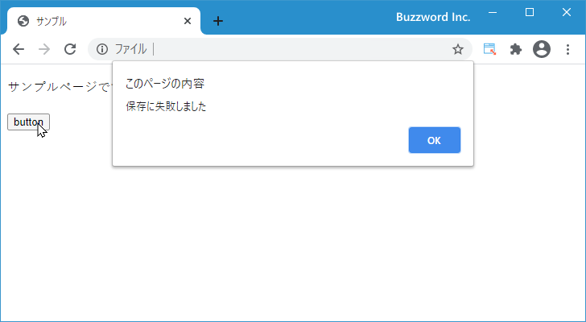
警告ダイアログはダイアログを閉じるボタンが一つだけ表示されるダイアログです。モーダルダイアログのため、ダイアログを閉じるまでブラウザでは別の操作を行うことはできません。
window オブジェクトのメソッドを実行するときに window. の部分は省略可能なので、次のどらちらかの方法で実行します。
window.alert('保存に失敗しました');
alert('保存に失敗しました');
次のサンプルを見てください。
<!DOCTYPE html>
<html lang="ja">
<head>
<meta charset="UTF-8">
<title>サンプル</title>
</head>
<body>
<p>サンプルページです。</p>
<input type="button" value="button" id="mybtn">
<script>
function butotnClick(){
alert('保存に失敗しました');
}
let button = document.getElementById('mybtn');
button.addEventListener('click', butotnClick);
</script>
</body>
</html>
画面に表示されているボタンをクリックすると警告ダイアログが表示されます。
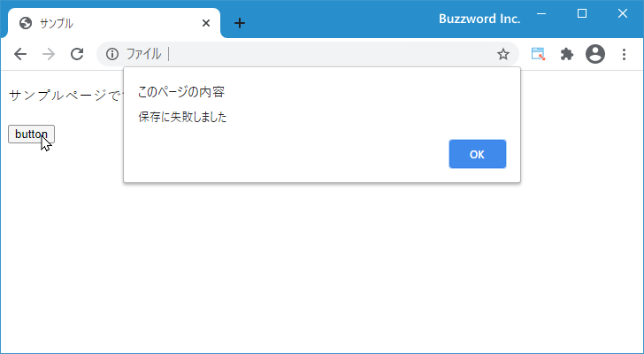
ダイアログに表示されている「OK」ボタンをクリックするとダイアログが閉じます。
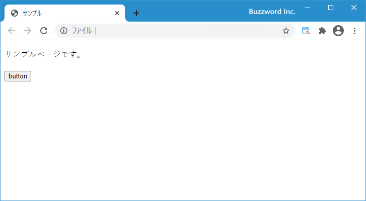
入力ダイアログを表示する(window.promtメソッド)
window オブジェクトの promt メソッドを実行すると入力ダイアログを表示することができます。入力ダイアログではテキストボックスが表示され、ユーザーに何らかの入力を行ってもらう場合に使用します。書式は次のとおりです。
value = window.prompt(msg[, default]);
一番目の引数にはダイアログに表示するテキストを文字列で指定してください。省略可能な二番目の引数にはテキストボックスに表示されるデフォルト値を入力してください。戻り値にはユーザーが入力した値が格納されます。
入力ダイアログは次のようなものです。
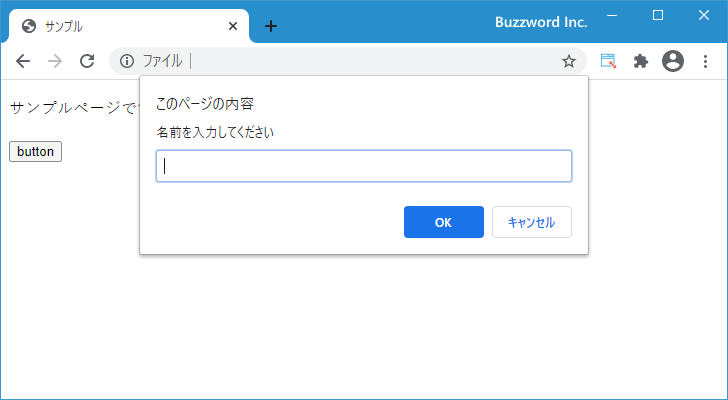
入力ダイアログはユーザーが入力するテキストボックスが一つと、「OK」と「キャンセル」のボタンが表示されるダイアログです。モーダルダイアログのため、ダイアログを閉じるまでブラウザでは別の操作を行うことはできません。
window オブジェクトのメソッドを実行するときに window. の部分は省略可能なので、次のどらちらかの方法で実行します。
let address = window.prompt('ご住所をお願いします');
let address = alert('ご住所をお願いします');
表示されるテキストボックスに初期値を入力する場合は、二番目の引数に指定してください。
let address = alert('ご住所をお願いします', '東京都');
次のサンプルを見てください。
<!DOCTYPE html>
<html lang="ja">
<head>
<meta charset="UTF-8">
<title>サンプル</title>
</head>
<body>
<p>サンプルページです。</p>
<input type="button" value="button" id="mybtn">
<script>
function butotnClick(){
let name = prompt('名前を入力してください');
console.log(name);
}
let button = document.getElementById('mybtn');
button.addEventListener('click', butotnClick);
</script>
</body>
</html>
画面に表示されているボタンをクリックすると入力ダイアログが表示されます。
ダイアログのテキストボックスにテキストを入力し、そのあとで「OK」ボタンをクリックすると入力ダイアログが閉じます。そしてユーザーが入力したテキストをコンソールに出力します。
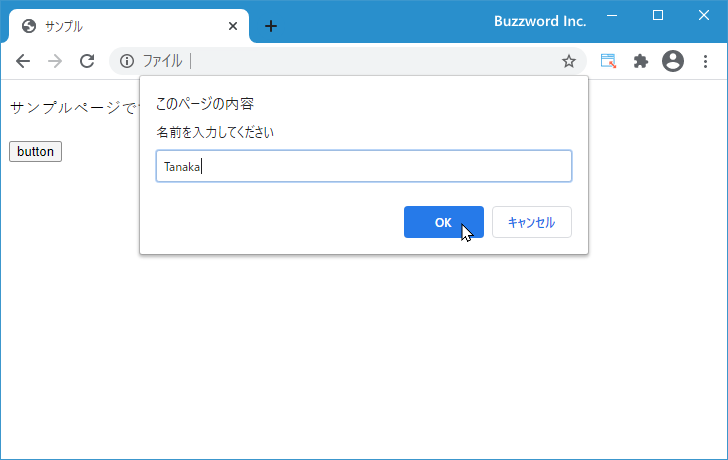

テキストボックスに何も入力しないまま「OK」ボタンをクリックすると入力ダイアログが閉じます。この場合、 promt メソッドの戻り値には空文字が格納されます。
テキストボックスで何か入力されているかどうかに関わらず「キャンセル」ボタンをクリックすると入力ダイアログが閉じます。この場合、 promt メソッドの戻り値には null が格納されます。
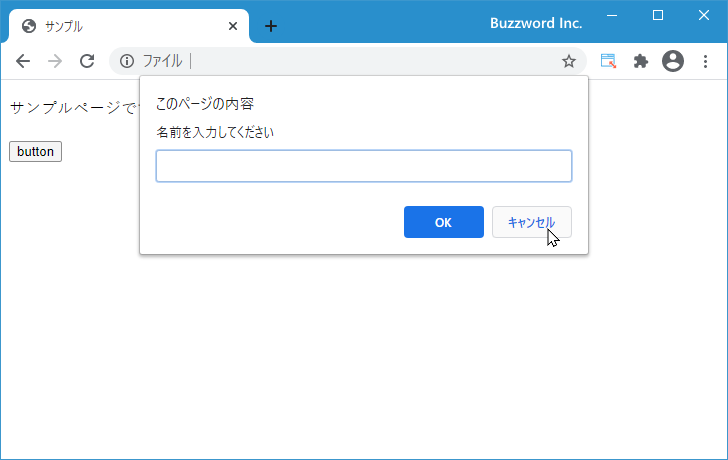
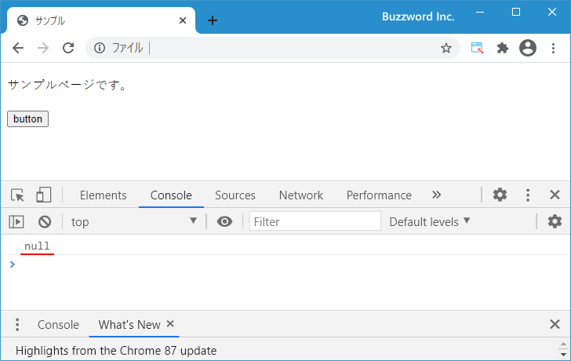
確認ダイアログを表示する(window.confirmメソッド)
window オブジェクトの confirm メソッドを実行すると確認ダイアログを表示することができます。確認ダイアログでは「OK」ボタンと「キャンセル」ボタンの 2 つのボタンが表示され、ユーザーに同意するかしないかの選択を行ってもらう場合に使用します。書式は次のとおりです。
value = window.confirm(msg);
引数にはダイアログに表示するテキストを文字列で指定してください。戻り値には「OK」ボタンがクリックされた場合は true 、「キャンセル」ボタンがクリックされた場合は false が格納されます。
確認ダイアログは次のようなものです。
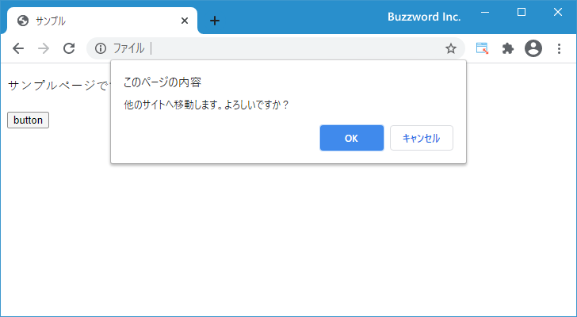
確認ダイアログは「OK」と「キャンセル」のボタンが表示されるダイアログです。モーダルダイアログのため、ダイアログを閉じるまでブラウザでは別の操作を行うことはできません。
window オブジェクトのメソッドを実行するときに window. の部分は省略可能なので、次のどらちらかの方法で実行します。
let check = window.confirm('削除しますか？');
let check = alert('削除しますか？');
次のサンプルを見てください。
<!DOCTYPE html>
<html lang="ja">
<head>
<meta charset="UTF-8">
<title>サンプル</title>
</head>
<body>
<p>サンプルページです。</p>
<input type="button" value="button" id="mybtn">
<script>
function butotnClick(){
let check = confirm('他のサイトへ移動します。よろしいですか？');
console.log(check);
}
let button = document.getElementById('mybtn');
button.addEventListener('click', butotnClick);
</script>
</body>
</html>
画面に表示されているボタンをクリックすると確認ダイアログが表示されます。
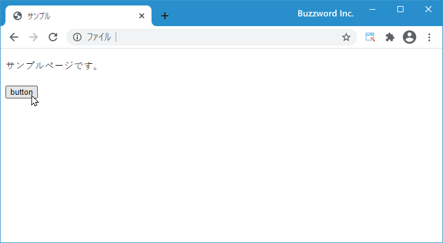
「OK」ボタンをクリックすると確認ダイアログが閉じます。「OK」ボタンの場合は true をコンソールに出力します。
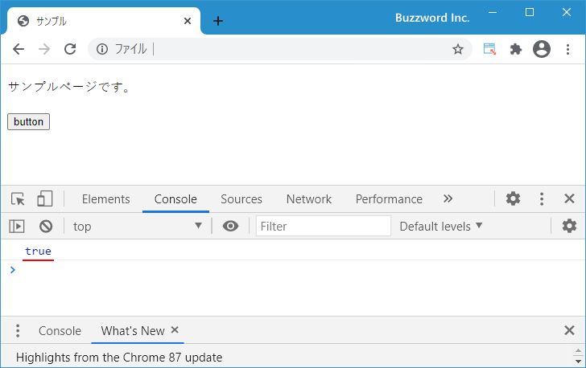
「キャンセル」ボタンをクリックすると確認ダイアログが閉じます。「キャンセル」ボタンの場合は false をコンソールに出力します。
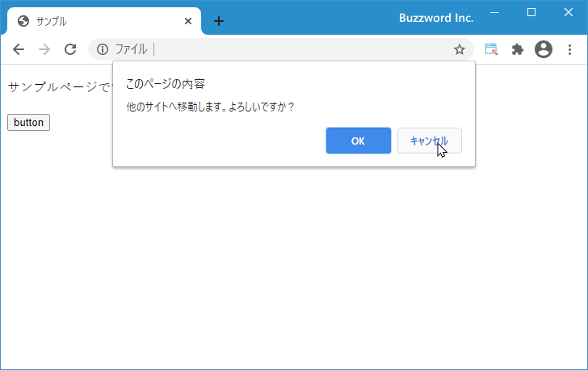
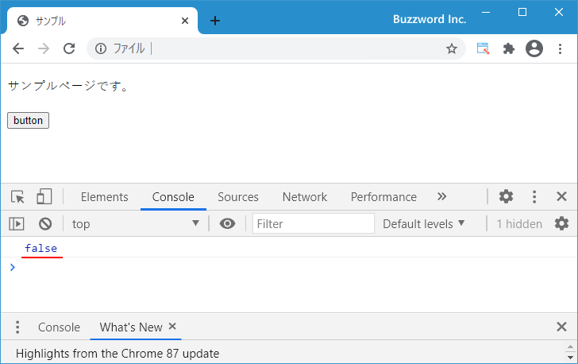
-- --
window オブジェクトで用意されているメソッドを使ってブラウザにダイアログを表示する方法について解説しました。
( Written by Tatsuo Ikura )

著者 / TATSUO IKURA
初心者～中級者の方を対象としたプログラミング方法や開発環境の構築の解説を行うサイトの運営を行っています。